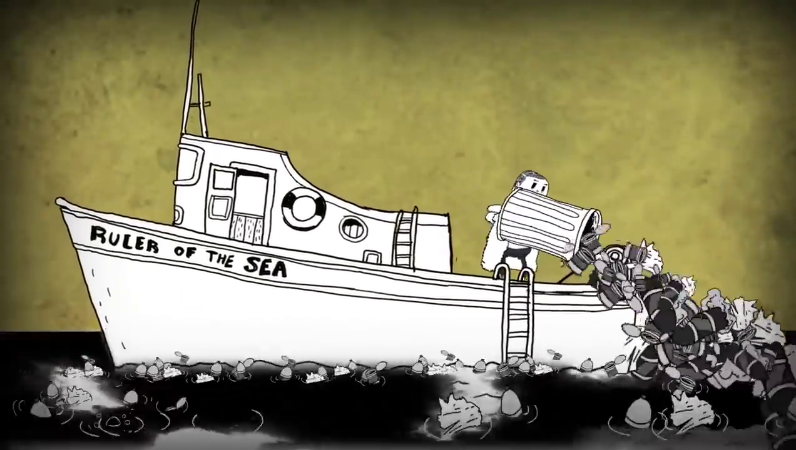

Homem poluidor dos oceanos
Agora Man aparece em um barco jogando lixo nos oceanos.
O lixo sempre foi um problema para a humanidade. Somente hoje sabemos um pouco melhor o que fazer com ele.
Nós que somos brasileiros estamos acostumados com muito espaço, afinal, nosso país é grande! Mas e os outros países que são menores? Onde colocam o lixo produzido pelas pessoas e pelas empresas?
Aos poucos estamos criando formas de transformar o lixo em coisas úteis para a sociedade. Novos produtos! Claro, as vezes o lixo é muito sujo ou tóxico e não pode ser reutilizado mas, até nestes casos já sabemos como fazer o descarte adequado para não prejudicar o meio ambiente e nós mesmos.